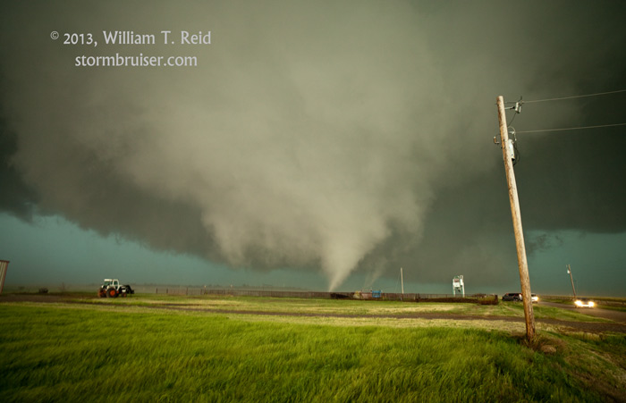
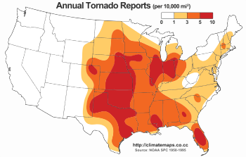
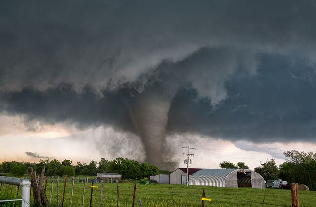
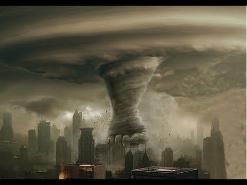

tornadua me grande ne bote ka qene tornadua e el renos ne 2013 ne oklahoma. Kjo ka vajtur na illionoisi ne indiana. Ka zgjatur 40 minuta dhe vrare 4 kameramuane.
Florida ka numrin me te madh te tornaduove me 12 ne vit. Nga 1 tornaduo ne muaj, uë. Mir që jëmi afër dëtit.
Tornadua me e reezikshme ka qën ajuo e Daulatpur–Saturia në bangdalesh duke vrare 1300 veta. Kjo tornaduo mori pjese ne 1989 dhe la shum vet pabukës.
 